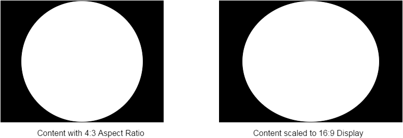

Overview
Applications send content to the display process with layer objects. During the graphics initialization sequence, layers are linked with textures that applications use as their final render target meant to appear on the display. A layer must be associated with a particular display.
Some parameters of the layer are defined when setting up the native window through the graphics APIs. (For the purposes of this documentation, the terms native window and layer may be used interchangeably.) The dimensions of the textures assigned to the native window relate to how the content may be scaled on the display.
Scaling
If the textures associated with a layer do not match the display resolution, then the content is subject to scaling. The final output will be upscaled or downscaled to the current display resolution. A particular platform may impose limitations on the minimum or maximum scaling ratios.
Content created at 1080p, the maximum supported resolution, can be downscaled to any of the other supported resolutions. If the texture dimensions exceed 1080p, then the display subsystem will be unable to downscale content if the user's display is using 480p. Additionally, there are no limitations on upscaling.
If the content cannot be scaled, it will not appear on the display.
A notable limitation of the scaling is that the aspect ratio is not preserved. For example, if the application submits a framebuffer with a 4:3 aspect ratio and the display is using a resolution with an aspect ratio of 16:9, then the content will appear stretched:

Lifecycle
Rendering a Frame
The layer owns all of the potential frame buffers used by the application.
On request, the display process will retrieve the next available buffer that the application provided.
The buffering mode (ex. double buffering) is set by the application with the graphics APIs. Please check their documentation for details about the available buffering modes.
Once retrieved, the application can render to the frame buffer.
Finally, the application must release the frame buffer back to the display process. The frame buffer is then queued for use on the display.
Syncing with Display
The process of rendering a frame remains the same no matter the buffering mode. However, one major detail is synchronizing with the refresh rate of the display.
The display process will only manage buffers on VSYNC events from the physical display. On VSYNC, the display process will use the most recently completed texture.
The graphics APIs provide a way to acquire and present textures. For illustration purposes, suppose the functions acquire retrieves the next available texture from the display process and present denotes the texture is ready for the display. Additionally, suppose textures A and B are associated with the same layer in the display pipeline. The basic rendering loop will look like this:
Texture* t; // Will point to A or B acquire(&t); // ... present(t); |
During the first frame, calling acquire will retrieve A from the display process. If there are GPU commands that will execute against A, then a lock is registered. This blocks the display process from acquiring the texture before rendering is finished.
Note the application can begin rendering B at this time in the next call to acquire – it does not need to explicitly wait for the VSYNC event to occur.
On VSYNC, the display process finds that A finished rendering. It now presents this to the display.
Now, the application calls present with texture B and proceeds to call acquire. At this point, acquire will block. The next texture, A, is still in use by the display and is locked by the display process. On the next VSYNC, B will appear on the display and the lock released on A.
CONFIDENTIAL